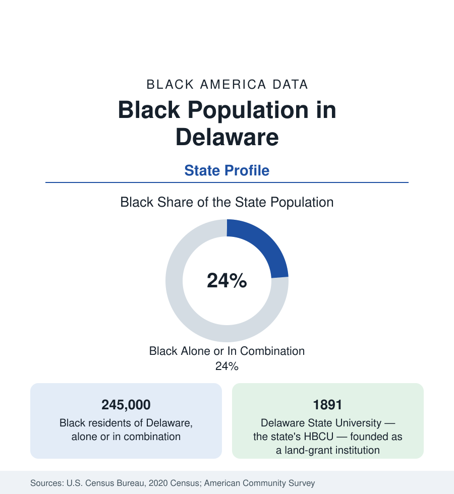

Black Census
Black Population in Delaware: A Fifth of the First State
About 245,000 Black Delawareans — nearly a quarter of the state — anchored by Wilmington and one of the East's oldest HBCUs. The census profile.

Delaware holds about 245,000 Black residents — Black alone or in combination — nearly a quarter of the First State's people, with Black alone at about 218,000, or 22 percent. It is the highest Black share of any state outside the Deep South's core, in a state small enough that its Black population and its largest city are nearly the same subject. Wilmington anchors the north; Dover, the capital, is the second center; and Delaware State University gives the state an HBCU anchor its size would not predict. This article profiles the population.
Wilmington: The Majority-Black Center
Wilmington, the state's largest city at about 71,000, is majority Black — roughly 56 to 58 percent in the modern counts — a corporate and banking city whose residential data invert its office towers' prosperity. The historic community centers on the East Side and the districts around it; the modern population spreads through the city's neighborhoods and into New Castle County's suburbs (Bear, New Castle, Middletown's boom districts), which hold the county's growth. New Castle County overall is roughly a quarter to three-tenths Black. The city's data carry the small-state version of the urban file: banking and incorporation wealth headquartered in its downtown beside neighborhood poverty rates among the region's most difficult, and a school-governance history — the metropolitan desegregation case that merged city and suburban districts for a generation — that remains the state's defining education chapter.
Dover and Downstate
Dover, the capital at about 40,000, is roughly two-fifths Black, its community built around state government, the Air Force base, and Delaware State University. Kent County's Black population — roughly a quarter to three-tenths of the county — descends from the state's farm-era communities as much as from migration. Sussex County, the shore-and-poultry south, holds the third layer: a Black population in the mid-teens percent share, rooted in the old farm towns (Milford, Seaford, Georgetown, Laurel) and now joined to the poultry-processing economy whose workforce layers Black, Haitian, and Latino communities through the county's towns — one of the more distinctive composition files in the mid-Atlantic data.
Delaware State and the HBCU Anchor
Delaware State University, founded in 1891 as the State College for Colored Students under the second Morrill Act, is the state's land-grant HBCU — enrollment in the range of 6,000 in recent counts, the state's second university, and the institutional center of Black Delaware: its alumni anchor the state's Black professional and public class, its Dover campus is the capital's second institution, and its recent research-university growth is tracked in the education section's HBCU data. In a state of under a million, an HBCU of that relative weight gives Black Delaware an institutional depth that states five times its size lack — the small-state advantage in its clearest form.
Composition and Indicators
Black Delaware's indicators run mid-South-Atlantic: median income below the state's high corporate-economy average but above the national Black figure, homeownership comparatively strong in the suburban counties, attainment rising through Delaware State and the University of Delaware. The composition is predominantly native-born and old-rooted, with growing Haitian communities downstate and African communities in New Castle County. The estimates show steady growth led by Middletown and the southern New Castle suburbs — the Philadelphia metro's expansion reaching into the state — with Wilmington's total stable and its share of the state's Black population slowly declining as the suburbs gain.
Reading the Delaware Numbers
A Border State's Deep Roots
Delaware's Black community is among the oldest in the mid-Atlantic in continuous record: a border state that held slavery to the eve of emancipation while sheltering one of the East's most active Underground Railroad corridors — Wilmington's stations and the harbor pilots' networks are the documented core of the state's freedom history — and free Black communities in its towns that predate the republic. That depth shows in the modern data as rootedness: multigenerational residence, church and family networks of long standing in every county, and a political presence in the state's small legislature that reflects seniority as much as numbers.
Delaware reads as a city-state profile: a quarter of a small state, one dominant city, one HBCU, three counties. Its Black population's weight in its state's life — political, institutional, cultural — exceeds what 245,000 people usually carry, because the state around them is small enough for them to constitute it.
More in Black Census
The Black Population of the United States: Size, Definitions, and Distribution
The Black population of the United States totals 52.8 million — 15.4 percent of the nation. How the Census Bureau defines and counts the population, and where it lives.
Black Median Household Income in the United States
Black median household income stands at $56,490 in the Census Bureau's annual income report — how the figure is measured, how it compares, and what drives it.
The Black Poverty Rate: Levels, Children, and the Long Trend
The official Black poverty rate is 17.1 percent — against 11.1 percent nationally and 7.7 percent for non-Hispanic White Americans. How poverty is measured and what the data show.
Source: U.S. Census Bureau, 2020 Census; American Community Survey; Population Estimates Program.